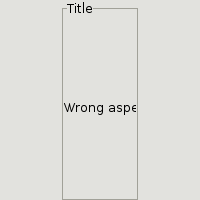

Class GTK2.AspectFrame
- Description
A W(Frame) widget that always maintain a specified ratio between width and height. width/height == ratio
GTK2.AspectFrame("Title",0.5,0.5,0.4,0)->add( GTK2.Label("Wrong aspect"))->set_size_request(200,200)Properties: int obey-child float ratio float xalign float yalign
- Inherit Frame
inherit GTK2.Frame : Frame
- Method create
GTK2.AspectFrame GTK2.AspectFrame(mapping|stringlabel,float|voidxalign,float|voidyalign,float|voidratio,int|voidobey_child)- Description
Create a new frame. Arguments are label, xalign, yalign, ratio, obey_child xalign is floats between 0 and 1, 0.0 is upper (or leftmost), 1.0 is lower (or rightmost). If 'obey_child' is true, the frame will use the aspect ratio of it's (one and only) child widget instead of 'ratio'.